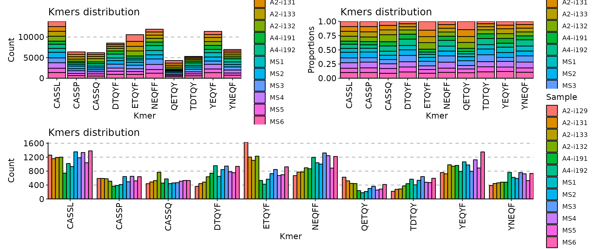
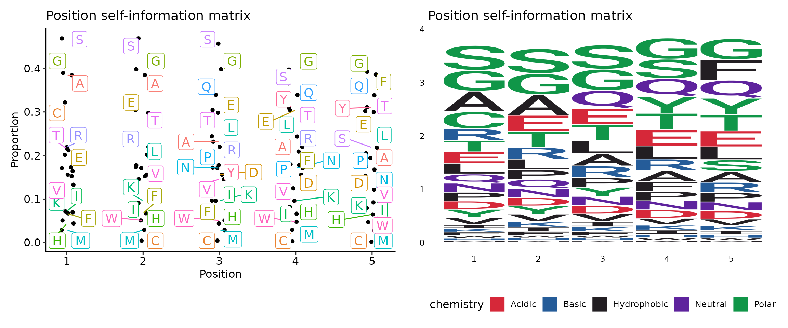

vignettes/web_only/v9_kmers.Rmd
v9_kmers.RmdCounting kmer occurrences in immunarch is very easy. All you need to do is to run the getKmers() function on your data:
kmers <- getKmers(immdata$data[[1]], 3)
kmers## # A tibble: 4,405 x 2
## Kmer Count
## <chr> <int>
## 1 AAA 6
## 2 AAD 5
## 3 AAE 9
## 4 AAF 2
## 5 AAG 37
## 6 AAI 2
## 7 AAK 5
## 8 AAL 4
## 9 AAM 1
## 10 AAN 13
## # … with 4,395 more rowsIf is possible to compute occurrences of kmers in a batch of immune repertoires. In order to do that, you just need to provide a list of immune repertoires to the function. NA means that there is no such kmer found in a sample, specifyed by the column name.
kmers <- getKmers(immdata$data, 5)
kmers## # A tibble: 172,926 x 13
## Kmer `A2-i129` `A2-i131` `A2-i133` `A2-i132` `A4-i191` `A4-i192` MS1 MS2
## <chr> <int> <int> <int> <int> <int> <int> <int> <int>
## 1 AAAAG NA NA NA NA NA NA NA 1
## 2 AAAAL NA NA NA NA NA NA NA NA
## 3 AAAAW NA NA NA NA NA 1 NA NA
## 4 AAADE NA NA NA NA NA NA NA NA
## 5 AAADN NA 1 NA NA NA NA NA NA
## 6 AAADT NA NA NA NA NA NA NA NA
## 7 AAAEA NA NA NA NA NA NA NA NA
## 8 AAAEN NA NA NA 1 NA NA NA NA
## 9 AAAET NA NA NA NA NA NA NA NA
## 10 AAAFE NA NA NA 1 NA NA NA NA
## # … with 172,916 more rows, and 4 more variables: MS3 <int>, MS4 <int>,
## # MS5 <int>, MS6 <int>Note that by default getKmers() filter out all non-coding sequences before counting the kmer statistics. You can use both coding and non-coding sequences by setting the .coding argument to FALSE:
kmers <- getKmers(immdata$data[[1]], 3, .coding = F)
kmers## # A tibble: 4,645 x 2
## Kmer Count
## <chr> <int>
## 1 **G 1
## 2 *~G 4
## 3 *~L 1
## 4 *AA 1
## 5 *D~ 1
## 6 *EE 1
## 7 *G~ 1
## 8 *GG 1
## 9 *GP 1
## 10 *HL 1
## # … with 4,635 more rowsTo visualise your kmer statistics, the vis() function comes to help:
The vis() function for kmers has a number of arguments to manipulate the plot. First, the .head argument specifies the number of the most abundant kmers to visualise.
p1 <- vis(kmers, .head = 5)
p2 <- vis(kmers, .head = 10)
p3 <- vis(kmers, .head = 30)
(p1 + p2) / p3Second, there are three options to choose from for positions of bars: “stack”, “dodge” and “fill”, adjusted by providing the correposnding option to the .position argument:
p1 <- vis(kmers, .head = 10, .position = "stack")
p2 <- vis(kmers, .head = 10, .position = "fill")
p3 <- vis(kmers, .head = 10, .position = "dodge")
(p1 + p2) / p3
Option “stack” stacks all bars on top of each other so you can see the full distribution of kmers. Option “fill” stack all bars on top of each other as well, but normalises it in a such way so you see distribution of counts per-kmer, i.e., you can clearly see which repertoire has more kmer counts than others for a specific kmer. Option “dodge” groups kmer bars of different samples so you can clearly see, which samples has more kmer occurrences overall.
Additional argument is .log needed if your distribution of kmer counts is vastly imbalanced for some of repertoires. It permits to use the log-transformation of y-axis so you can see differences in orders of magnitude in kmer counts rather.
immunarch utilises common approaches to sequence motif analysis and uses different types of matrices to represent sequence motifs:
To compute and visualise sequence motifs, first you need to compute kmer statistics for one of the input immune repertoires, and then apply the kmer_profile() function to compute sequence motif matrices:
kmers <- getKmers(immdata$data[[1]], 5)
kmer_profile(kmers)## [,1] [,2] [,3] [,4] [,5]
## A 8955 8976 3791 3246 3159
## C 6469 26 27 18 10
## D 2129 2131 2131 2130 2085
## E 3315 5868 5872 5870 5720
## F 688 691 691 2600 9029
## G 9194 9603 9603 9566 9326
## H 405 405 405 680 659
## I 750 1020 1107 896 852
## K 721 1099 1100 1100 1044
## L 3073 3078 4108 4097 4033
## M 241 245 246 246 226
## N 2421 2423 2424 2419 2355
## P 2285 2564 2564 2559 2509
## Q 2459 2466 7087 7086 7051
## R 3487 3502 3504 3496 2917
## S 14021 14029 13082 8128 3462
## T 3408 5669 5671 6024 5797
## V 1703 1927 1927 1561 1508
## W 485 486 487 450 439
## Y 2060 2061 2442 6097 6088
## attr(,"class")
## [1] "immunr_kmer_profile_pfm" "matrix"
## [3] "array"Currently we are not supporting sequence motifs analysis for more than one sample, but we are working on it. In order to compute and visualise sequence motif matrices for all of your samples you need to process them one-by-one, which can be easily done in for-loops or via the lapply() function.
Argument .method specifies which matrix to compute:
.method = "freq" - position frequency matrix (PFM);.method = "prob" - position probability matrix (PPM);.method = "wei" - position weight matrix (PWM);.method = "self" - self-information matrix.
kmer_profile(kmers, "freq")## [,1] [,2] [,3] [,4] [,5]
## A 8955 8976 3791 3246 3159
## C 6469 26 27 18 10
## D 2129 2131 2131 2130 2085
## E 3315 5868 5872 5870 5720
## F 688 691 691 2600 9029
## G 9194 9603 9603 9566 9326
## H 405 405 405 680 659
## I 750 1020 1107 896 852
## K 721 1099 1100 1100 1044
## L 3073 3078 4108 4097 4033
## M 241 245 246 246 226
## N 2421 2423 2424 2419 2355
## P 2285 2564 2564 2559 2509
## Q 2459 2466 7087 7086 7051
## R 3487 3502 3504 3496 2917
## S 14021 14029 13082 8128 3462
## T 3408 5669 5671 6024 5797
## V 1703 1927 1927 1561 1508
## W 485 486 487 450 439
## Y 2060 2061 2442 6097 6088
## attr(,"class")
## [1] "immunr_kmer_profile_pfm" "matrix"
## [3] "array"
kmer_profile(kmers, "prob")## [,1] [,2] [,3] [,4] [,5]
## A 0.131172274 0.1314798811 0.0555303286 0.0475472030 0.0462728325
## C 0.094757503 0.0003808464 0.0003954943 0.0002636629 0.0001464794
## D 0.031185458 0.0312147534 0.0312147534 0.0312001055 0.0305409483
## E 0.048557911 0.0859540934 0.0860126851 0.0859833892 0.0837861987
## F 0.010077781 0.0101217244 0.0101217244 0.0380846358 0.1322562217
## G 0.134673131 0.1406641375 0.1406641375 0.1401221638 0.1366066590
## H 0.005932414 0.0059324144 0.0059324144 0.0099605970 0.0096529904
## I 0.010985953 0.0149408956 0.0162152661 0.0131245514 0.0124800422
## K 0.010561162 0.0160980826 0.0161127305 0.0161127305 0.0152924461
## L 0.045013110 0.0450863496 0.0601737245 0.0600125972 0.0590751293
## M 0.003530153 0.0035887445 0.0036033925 0.0036033925 0.0033104337
## N 0.035462655 0.0354919510 0.0355065989 0.0354333592 0.0344958913
## P 0.033470536 0.0375573101 0.0375573101 0.0374840704 0.0367516735
## Q 0.036019277 0.0361218122 0.1038099284 0.1037952804 0.1032826026
## R 0.051077356 0.0512970748 0.0513263707 0.0512091872 0.0427280318
## S 0.205378722 0.2054959059 0.1916243097 0.1190584306 0.0507111573
## T 0.049920169 0.0830391539 0.0830684498 0.0882391715 0.0849140899
## V 0.024945436 0.0282265743 0.0282265743 0.0228654294 0.0220890888
## W 0.007104249 0.0071188973 0.0071335452 0.0065915716 0.0064304443
## Y 0.030174750 0.0301893978 0.0357702618 0.0893084709 0.0891766395
## attr(,"class")
## [1] "immunr_kmer_profile_ppm" "matrix"
## [3] "array"
kmer_profile(kmers, "wei")## [,1] [,2] [,3] [,4] [,5]
## A 8.806550 8.8099289 7.5664346 7.3425192 7.303324
## C 8.337399 0.3785116 0.4329594 -0.1520031 -1.000000
## D 6.734032 6.7353868 6.7353868 6.7347096 6.703904
## E 7.372865 8.1967251 8.1977082 8.1972167 8.159871
## F 5.104337 5.1106138 5.1106138 7.0223678 8.818422
## G 8.844549 8.9073414 8.9073414 8.9017720 8.865115
## H 4.339850 4.3398500 4.3398500 5.0874628 5.042207
## I 5.228819 5.6724253 5.7905114 5.4854268 5.412782
## K 5.171927 5.7800476 5.7813597 5.7813597 5.705978
## L 7.263504 7.2658494 7.6822924 7.6784241 7.655710
## M 3.590961 3.6147098 3.6205864 3.6205864 3.498251
## N 6.919459 6.9206506 6.9212459 6.9182670 6.879583
## P 6.836050 7.0022525 7.0022525 6.9994363 6.970969
## Q 6.941928 6.9460290 8.4690312 8.4688277 8.461684
## R 7.445843 7.4520353 7.4528590 7.4495614 7.188342
## S 9.453374 9.4541965 9.3533674 8.6667566 7.435462
## T 7.412782 8.1469505 8.1474593 8.2345780 8.179163
## V 6.411935 6.5902128 6.5902128 6.2863267 6.236493
## W 4.599913 4.6028844 4.6058499 4.4918531 4.456149
## Y 6.686501 6.6872007 6.9319194 8.2519557 8.249825
## attr(,"class")
## [1] "immunr_kmer_profile_pwm" "matrix"
## [3] "array"
kmer_profile(kmers, "self")## [,1] [,2] [,3] [,4] [,5]
## A 0.38439580 0.384852924 0.231593692 0.208945980 0.20515943
## C 0.32213912 0.004325845 0.004470689 0.003134693 0.00186571
## D 0.15602031 0.156124588 0.156124588 0.156072452 0.15371599
## E 0.21191400 0.304302404 0.304425277 0.304363847 0.29971526
## F 0.06684268 0.067070605 0.067070605 0.179555617 0.38600202
## G 0.38953746 0.398033587 0.398033587 0.397280373 0.39232070
## H 0.04388305 0.043883048 0.043883048 0.066233509 0.06462492
## I 0.07149874 0.090610399 0.096424136 0.082049289 0.07892670
## K 0.06933496 0.095895752 0.095961867 0.095961867 0.09222931
## L 0.20136664 0.201588530 0.243987757 0.243566576 0.24110364
## M 0.02875681 0.029148878 0.029246677 0.029246677 0.02727388
## N 0.17084331 0.170942166 0.170991579 0.170744427 0.16756143
## P 0.16403791 0.177824941 0.177824941 0.177583728 0.17516018
## Q 0.17271556 0.173059094 0.339249150 0.339222412 0.33828469
## R 0.21918174 0.219806921 0.219890176 0.219557010 0.19435586
## S 0.46901135 0.469109844 0.456764807 0.365540136 0.21813673
## T 0.21586646 0.298115914 0.298178816 0.309052134 0.30211178
## V 0.13283645 0.145276593 0.145276593 0.124632326 0.12150152
## W 0.05070375 0.050787142 0.050870488 0.047757003 0.04681920
## Y 0.15239801 0.152450850 0.171879524 0.311245305 0.31097592
## attr(,"class")
## [1] "immunr_kmer_profile_self" "matrix"
## [3] "array"Visualisation of sequence motif matrices is done by vis(). There are two types of plots to choose from - sequence logo and “text logo”. The argument .plot regulates the type of plot: .plot = "seq" for sequence logo plots and .plot = "text" (by default) for “text logo” plots.
kp <- kmer_profile(kmers, "self")
p1 <- vis(kp)
p2 <- vis(kp, .plot = "seq")
p1 + p2## Warning: ggrepel: 13 unlabeled data points (too many overlaps). Consider
## increasing max.overlaps
Can not find an important feature? Have a question or found a bug? Contact us at support@immunomind.io